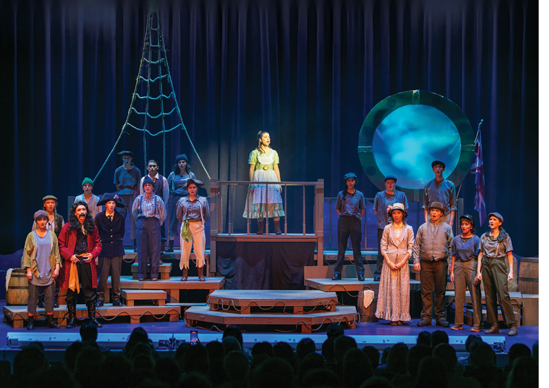

Short supporting description.

BMC V3 Component Library
Reusable Components
A lightweight, scoped CSS framework for Bishop Moore Catholic webpages.
Type System
Typography
Heading 1
Use for the main page title. One H1 per page is recommended.
Heading 2
Use for major page sections.
Heading 3
Use for component and subsection titles.
Heading 4
Use for smaller content groupings.
Heading 5
Use for labels and tertiary headings.
Heading 6
Use for the smallest semantic heading level.
This is a standard paragraph. It demonstrates the default body type, line height, and spacing inside the bmc-v3 namespace.
This is lead text for introductions and important opening statements.
This is small text.
This is extra-small text.
Heading Weight Variations
Light heading
Regular heading
Medium heading
Semibold heading
Bold heading
Split Heading
Core Pattern
56
Elective Courses
100%
Participation
19
Faculty & Assistants
Historic Campus
Past Science Labs
Arts Today
Learning Today
Section Heading
Use the bmc-v3 wrapper once around the content area. Every component and utility is scoped beneath that namespace.
Standard Card
Card Title
A flexible content block for highlights, program summaries, calls to action, and supporting information.
Learn MoreShort supporting description.
Short supporting description.
“This is an example of the reusable quote component used throughout campaign and program pages.”Example Attribution
Callout Component
Use this for important notes, campaign updates, deadlines, or explanatory information.
Responsive Media
Video and Image Ratios
Use bmc-ratio with bmc-ratio-16x9, bmc-ratio-4x3, bmc-ratio-1x1, or bmc-ratio-3x4.
Hexagons
Flat-top is the default. Add bmc-hex-pointed for a point-up/point-down hexagon.
6
Projects Completed
25
Founding Members
70
Years of Faith, Excellence & Service
25
Pointed Variation
Pills
Default
Gold
Dark
Outline
Small
Large
Legacy Image Cards
Team Timeline
Portraits are circular by default. Replace bmc-image-circle with bmc-image-hex for a flat-top hexagon or bmc-image-hex-pointed for a point-up/point-down hexagon.
Tanya Starrett '01
Director of Advancement
Leads fundraising, donor relations, events, grants, campaigns, and advancement communications.
Kelly Carbone
Corporate Partnership & Data Manager
Develops strategic partnerships and oversees the integrity and use of advancement data.
Genevieve Fable
Creative Director
Provides vision and leadership for branding, marketing, communications, and storytelling.
Left Timeline Variant
Add bmc-team-timeline-left to place the rail on the left and keep every entry on one side. This variation works well for institutional histories, project milestones, and event chronologies.
1954
Orlando Central Catholic opened, founded by the Sisters of St. Joseph of St. Augustine.
1955
The school became Bishop Moore Catholic and graduated its first class.
Alternating Grid Utility
Odd items move left and even items move right on large screens. The optional alignment modifier follows the same pattern.
First Item
Left column and right-aligned on large screens.
Second Item
Right column and left-aligned on large screens.
Third Item
Returns to the left column automatically.
Fourth Item
Returns to the right column automatically.
| Component | Class | Purpose |
|---|---|---|
| Button | bmc-btn | Primary action |
| Card | bmc-card | Content grouping |
| Statistic | bmc-stat | Numeric highlight |
Buttons
Bootstrap-like Helpers
Utility Classes
Text
Left aligned
Centered
Right aligned
Bold uppercase
Muted text
Spacing
bmc-mt-1 through bmc-mt-5
bmc-mb-1 through bmc-mb-5
bmc-p-1 through bmc-p-5
bmc-gap-1 through bmc-gap-5
Display
bmc-d-flex
bmc-d-grid
bmc-justify-between
bmc-align-center
bmc-flex-wrap
Responsive 12-Column Grid
12 / 6 / 3
12 / 6 / 3
12 / 6 / 3
12 / 6 / 3
List Utilities
- Reusable check-list styling
- Safe left padding that will not collide with bullets
- Works inside cards, columns, and callouts